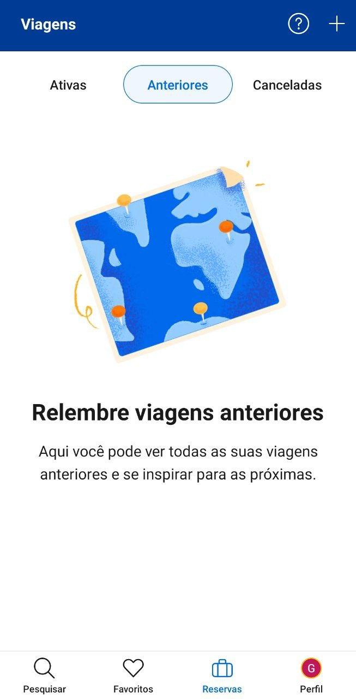
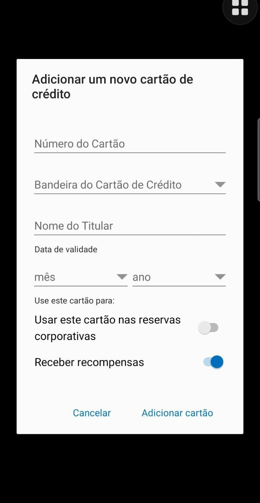
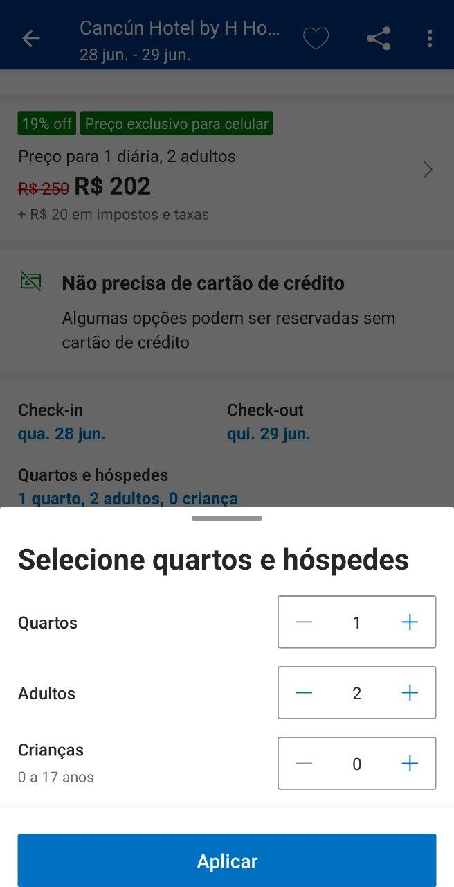
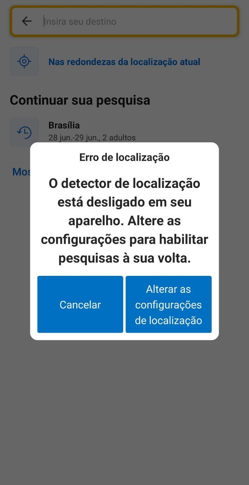
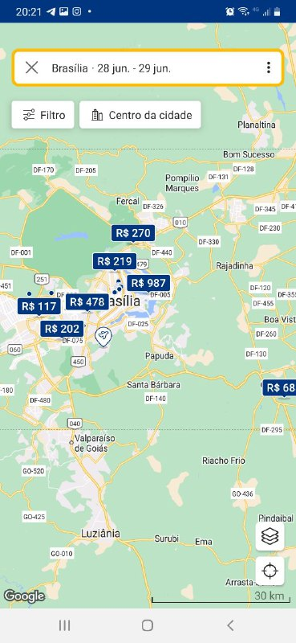
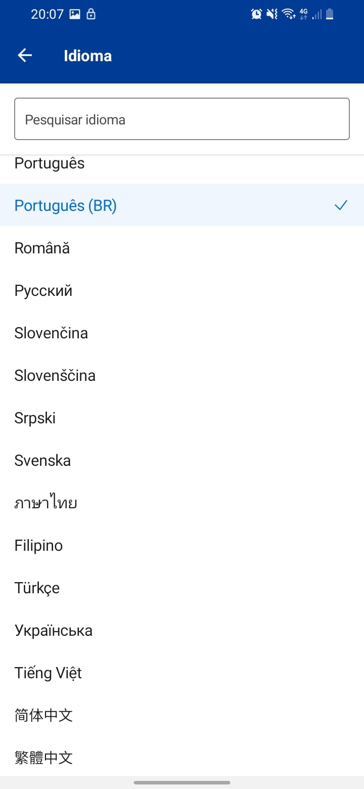
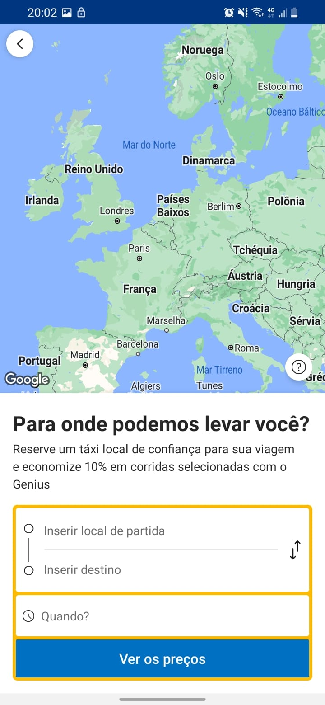
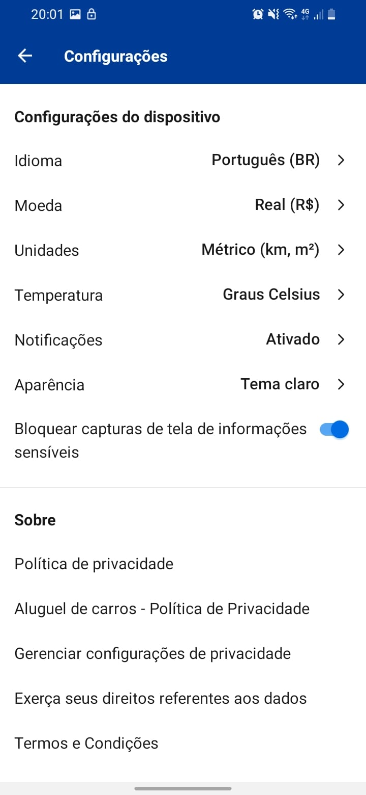

Forward From
Introdução
Este artefato tem como objetivo registrar a pós-rastreabilidade dos artefatos e requisitos do projeto, utilizando a metodologia "Forward-from", na qual liga os requisitos gerados por meio da elicitação de requisitos, aos seus artefatos feitos durante o andamento do projeto e da disciplina.
Metodologia
A partir dos requisitos padronizados dentro do Backlog, foi feita a rastreablidade dos mesmos, foi utilizado o meta-modelo fornecido por Toranzo [1]. Toranzo descreve que o meta-modelo precisa ser alguns dos seguintes:
- Ambiental: informações oriundas do contexto no qual a organização está inserida;
- Organizacional: informações pertencentes à organização (missão, objetivos e estratégias);
- Gerencial: informações que auxiliam a gerência do projeto;
- Desenvolvimento: informações associadas aos diversos artefatos gerados ao longo do processo de desenvolvimento (artefatos de requisitos, diagramas, códigos, casos de teste e outros).
Portanto, todos as tabelas foram feitas com o meta-modelo de Desenvolvimento, pois o objetivo é rastrear os artefatos gerados ao longo do processo de desenvolvimento.
Além disso, o meta-modelo de Desenvolvimento deve possuir os seguintes elementos:
- Satisfação: classe origem tem dependência de satisfação com a classe destino.
- Recurso: classe origem tem dependência de recurso com a classe destino.
- Responsabilidade: registra a participação, responsabilidade e ação de pessoas sobre artefatos.
- Representação: captura a representação ou modelagem dos requisitos em outras linguagens.
- Alocado: classe origem está relacionada à classe destino, que representa um subsistema.
- Agregação: indica “composição” de elementos.
Os autores decidiram retirar "Responsabilidade" e "Alocado", pois foi entendido que eles não eram atendidos, dado que essa disciplina não contempla o desenvolvimento do aplicativo.
A Tabela 1 mostra o modelo padrão que será utilizado nesse artefato como padronização do processo.
| Artefato | Desenvolvimento |
|---|---|
| Elos | Relacionamentos |
| Satisfação | - |
| Recurso | - |
| Representação | - |
| Agregação | - |
Tabela 1: Tabela padrão para o forward from. (Fonte: Lucas e Samuel, 2023).
RF01
O aplicativo deve permitir que os usuários se registrem fornecendo informações básicas, como nome, sobrenome, endereço de e-mail e senha.
| RF06 | Desenvolvimento |
|---|---|
| Elos | Relacionamentos |
| Satisfação | Especificação suplementar SUPT02 Especificação suplementar CONF03 NRF Usabilidade |
| Recurso | Lexico 09 Caso de uso 01 |
| Representação | Épico 10 Cenário 02 |
| Agregação | FST01 e FOBS01 |
Tabela 2: Tabela forward from para o requisito funcional 03. (Fonte: Lucas e Samuel, 2023).
RF02
O aplicativo deve permitir que os usuários pesquisem acomodações com base em critérios específicos, como localização, datas de check-in e check-out, tipo de quarto e preço.
| RF06 | Desenvolvimento |
|---|---|
| Elos | Relacionamentos |
| Satisfação | Especificação suplementar USAB06 Especificação suplementar PERF02 NRF Usabilidade |
| Recurso | Lexico 09 Caso de uso 02 |
| Representação | Historia de Usuário 09 Épico 01 |
| Agregação | FST02 |
Tabela 3: Tabela forward from para o requisito funcional 03. (Fonte: Lucas e Samuel, 2023).
RF03
O aplicativo deve permitir que os usuários reservem acomodações selecionadas, inserindo as informações de pagamento e confirmando a reserva.
| RF03 | Desenvolvimento |
|---|---|
| Elos | Relacionamentos |
| Satisfação | Especificação suplementar PERF01 Especificação suplementar USAB01 NRF Usabilidade |
| Recurso | Caso de uso 03 Lexico 15 |
| Representação | Historia de Usuário 34 Épico 01 Cenário 03 |
| Agregação | FST03, FB03 e FOBS06 |
Tabela 4: Tabela forward from para o requisito funcional 03. (Fonte: Lucas e Samuel, 2023).
RF04
O aplicativo deve permitir que os usuários cancelem suas reservas de acomodação, desde que sejam feitas dentro dos termos e condições estabelecidos pela empresa.
| RF04 | Desenvolvimento |
|---|---|
| Elos | Relacionamentos |
| Satisfação | Especificação suplementar USAB01 NRF Usabilidade |
| Recurso | Lexico 10 |
| Representação | Historia de Usuário 24 Épico 01  |
| Agregação | FST04 e FB04 |
Tabela 5: Tabela forward from para o requisito funcional 03. (Fonte: Lucas e Samuel, 2023).
RF05
O aplicativo deve permitir que os usuários pesquisem voos com base em critérios específicos, como origem, destino, datas e número de passageiros.
| RF05 | Desenvolvimento |
|---|---|
| Elos | Relacionamentos |
| Satisfação | Especificação suplementar USAB02 Especificação suplementar USAB04 NRF Usabilidade |
| Recurso | Caso de uso 02 Lexico 09 |
| Representação | Épico 02 História de usuário 09  |
| Agregação | FST05 |
Tabela 6: Tabela forward from para o requisito funcional 03. (Fonte: Lucas e Samuel, 2023).
RF06
O aplicativo deve permitir que os usuários reservem voos selecionados, inserindo as informações de pagamento e confirmando a reserva.
| RF06 | Desenvolvimento |
|---|---|
| Elos | Relacionamentos |
| Satisfação | Especificação suplementar USAB06 Especificação suplementar PERF02 NRF Usabilidade |
| Recurso | Lexico 15 Caso de uso 06 |
| Representação | Historia de Usuário 26 Épico 02 Cenário 02 |
| Agregação | FST06 e FOBS07 |
Tabela 7: Tabela forward from para o requisito funcional 03. (Fonte: Lucas e Samuel, 2023).
RF07
O aplicativo deve permitir que os usuários gerenciem suas reservas existentes, incluindo a visualização de detalhes da reserva, alterações de datas e cancelamentos.
| RF07 | Desenvolvimento |
|---|---|
| Elos | Relacionamentos |
| Satisfação | Especificação suplementar USAB03 Especificação suplementar CONF04 NRF Confiabilidade |
| Recurso | Lexico 09 |
| Representação | Historia de Usuário 27 Épico 01 |
| Agregação | FST08 |
Tabela 8: Tabela forward from para o requisito funcional 03. (Fonte: Lucas e Samuel, 2023).
RF08
O aplicativo deve permitir que os usuários visualizem seu histórico de reservas anteriores, incluindo informações como datas, acomodações e voos reservados.
| RF08 | Desenvolvimento |
|---|---|
| Elos | Relacionamentos |
| Satisfação | Especificação suplementar USAB03 Especificação suplementar CONF04 NRF Confiabilidade |
| Recurso | Lexico 09 |
| Representação | Historia de Usuário 27 Épico 01  |
| Agregação | FST10, FB05 , FB06 e FOBS13 |
Tabela 9: Tabela forward from para o requisito funcional 03. (Fonte: Lucas e Samuel, 2023).
RF09
O sistema deve possuir escolha do método de pagamento
| RF09 | Desenvolvimento |
|---|---|
| Elos | Relacionamentos |
| Satisfação | Especificação suplementar 4 Especificação suplementar 2 NRF Usabilidade |
| Recurso | Caso de uso 04 Lexico 11 |
| Representação | Historia de Usuário 29 Épico 07  |
| Agregação | FB02 |
Tabela 10: Tabela forward from para o requisito funcional 03. (Fonte: Lucas e Samuel, 2023).
RF10
Permitir que um grupo de pessoas reservem um local.
| RF10 | Desenvolvimento |
|---|---|
| Elos | Relacionamentos |
| Satisfação | Especificação suplementar USAB01 Especificação suplementar SUPT01 NRF Usabilidade |
| Recurso | Caso de uso 03 Lexico 15 |
| Representação | Historia de Usuário 34 Épico 01 Cenário 03  |
| Agregação | FB07 |
Tabela 11: Tabela forward from para o requisito funcional 03. (Fonte: Lucas e Samuel, 2023).
RF11
Sincronizar as datas das reservas com o calendário do usuário.
| RF11 | Desenvolvimento |
|---|---|
| Elos | Relacionamentos |
| Satisfação | Especificação suplementar SUPT02 Especificação suplementar IMPL01 NRF Usabilidade |
| Recurso | - |
| Representação | - |
| Agregação | FB09 |
Tabela 12: Tabela forward from para o requisito funcional 03. (Fonte: Lucas e Samuel, 2023).
RF12
Permitir visualização de imagens do local pelo usuário.
| RF12 | Desenvolvimento |
|---|---|
| Elos | Relacionamentos |
| Satisfação | Especificação suplementar USAB03 Especificação suplementar CONF04 Especificação suplementar PERF01 NRF Usabilidade |
| Recurso | Cenário 04 Cenário 03 Léxico 09 |
| Representação | Prototipo de alta fidelidade |
| Agregação | FB12 |
Tabela 13: Tabela forward from para o requisito funcional 03. (Fonte: Lucas e Samuel, 2023).
RF13
Permitir visualização de imagens do carro pelo usuário.
| RF13 | Desenvolvimento |
|---|---|
| Elos | Relacionamentos |
| Satisfação | Especificação suplementar USAB03 Especificação suplementar CONF04 Especificação suplementar PERF01 NRF Usabilidade |
| Recurso | Cenário 05 Lexico 09 Épico 09 |
| Representação | |
| Agregação | FB13 |
Tabela 14: Tabela forward from para o requisito funcional 03. (Fonte: Lucas e Samuel, 2023).
RF14
O sistema deve ser capaz de localizar o usuário se permitido.
| RF14 | Desenvolvimento |
|---|---|
| Elos | Relacionamentos |
| Satisfação | Especificação suplementar USAB03 Especificação suplementar CONF03 NRF Confiabilidade |
| Recurso | Lexico 12 |
| Representação | Épico 11  |
| Agregação | FB22 |
Tabela 15: Tabela forward from para o requisito funcional 03. (Fonte: Lucas e Samuel, 2023).
RF15
O sistema deve sugerir hospedagens de acordo com a localização do usuário.
| RF15 | Desenvolvimento |
|---|---|
| Elos | Relacionamentos |
| Satisfação | Especificação suplementar USAB03 Especificação suplementar USAB05 NRF Usabilidade |
| Recurso | Caso de uso 03 Lexico 04 |
| Representação | Historia de Usuário 02 Épico 11 |
| Agregação | FB23 e FOBS04 |
Tabela 16: Tabela forward from para o requisito funcional 03. (Fonte: Lucas e Samuel, 2023).
RF16
O sistema deve oferecer uma aba de perguntas.
| RF16 | Desenvolvimento |
|---|---|
| Elos | Relacionamentos |
| Satisfação | Especificação suplementar USAB04 Especificação suplementar PERF02 NRF Usabilidade |
| Recurso | Lexico 13 |
| Representação | Historia de Usuário 30 Épico 12 |
| Agregação | FB24 |
Tabela 17: Tabela forward from para o requisito funcional 03. (Fonte: Lucas e Samuel, 2023).
RF17
O sistema deve conter um bate-papo para contato com o locatário ou empresa em que foi feito a reserva.
| RF17 | Desenvolvimento |
|---|---|
| Elos | Relacionamentos |
| Satisfação | Especificação suplementar USAB04 Especificação suplementar PERF02 NRF Usabilidade |
| Recurso | Caso de uso 03 Lexico 13 |
| Representação | Épico 01 Cenário 12 |
| Agregação | FB25 |
Tabela 18: Tabela forward from para o requisito funcional 03. (Fonte: Lucas e Samuel, 2023).
RF18
O sistema deve ter um sistema de pontuação ligada ao usuário.
| RF18 | Desenvolvimento |
|---|---|
| Elos | Relacionamentos |
| Satisfação | Especificação suplementar 4 Especificação suplementar 2 NRF Usabilidade |
| Recurso | Lexico 07 |
| Representação | Cenário 06 |
| Agregação | FB26 e FOBS03 |
Tabela 19: Tabela forward from para o requisito funcional 03. (Fonte: Lucas e Samuel, 2023).
RF19
O usuário deve poder denunciar contas.
| RF19 | Desenvolvimento |
|---|---|
| Elos | Relacionamentos |
| Satisfação | Especificação suplementar USAB01 Especificação suplementar USAB04 NRF Usabilidade |
| Recurso | História de usuário 32 Épico 01 |
| Representação | Protótipo de alta fidelidade |
| Agregação | FB27 |
Tabela 20: Tabela forward from para o requisito funcional 03. (Fonte: Lucas e Samuel, 2023).
RF20
Deve existir uma pesquisa por comando de voz.
| RF20 | Desenvolvimento |
|---|---|
| Elos | Relacionamentos |
| Satisfação | Especificação suplementar USAB02 Especificação suplementar INTF01 NRF Usabilidade |
| Recurso | Lexico 09 |
| Representação | Épico 01 |
| Agregação | FB31 |
Tabela 21: Tabela forward from para o requisito funcional 03. (Fonte: Lucas e Samuel, 2023).
RF21
O usuário deve poder avaliar e comentar reservas.
| RF21 | Desenvolvimento |
|---|---|
| Elos | Relacionamentos |
| Satisfação | Especificação suplementar USAB04 Especificação suplementar PERF03 NRF Usabilidade |
| Recurso | Lexico 15 |
| Representação | Historia de Usuário 16 Épico 09 Cenário 06 |
| Agregação | FB28 e FST09 |
Tabela 22: Tabela forward from para o requisito funcional 03. (Fonte: Lucas e Samuel, 2023).
RF22
Deve ser possível filtrar as pesquisas.
| RF22 | Desenvolvimento |
|---|---|
| Elos | Relacionamentos |
| Satisfação | Especificação suplementar PERF01 Especificação suplementar USAB01 NRF Usabilidade |
| Recurso | Caso de uso 02 Lexico 15 |
| Representação | Historia de Usuário 09 Épico 09 |
| Agregação | FOBS05 e FB30 |
Tabela 23: Tabela forward from para o requisito funcional 03. (Fonte: Lucas e Samuel, 2023).
RF23
Deve ser possível alugar carros.
| RF23 | Desenvolvimento |
|---|---|
| Elos | Relacionamentos |
| Satisfação | NRF Usabilidade |
| Recurso | Caso de Uso 05 Cenário 01 |
| Representação | História de Usuário 36 Épico 04 |
| Agregação | FOBS08 |
Tabela 24: Tabela padrão para o forward from. (Fonte: Lucas e Samuel, 2023).
RF24
O aplicativo deve ter mapa interativo.
| RF24 | Desenvolvimento |
|---|---|
| Elos | Relacionamentos |
| Satisfação | NRF Usabilidade |
| Recurso | Léxico 12 |
| Representação | História de Usuário 12  |
| Agregação | FOBS10 e FOBS14 |
Tabela 25: Tabela padrão para o forward from. (Fonte: Lucas e Samuel, 2023).
RF25
O aplicativo deve ter uma aba de favoritos.
| RF25 | Desenvolvimento |
|---|---|
| Elos | Relacionamentos |
| Satisfação | NRF Usabilidade Especificação suplementar 6 |
| Recurso | Léxico 03 |
| Representação | História de Usuário 14 |
| Agregação | FOBS12 e FB10 |
Tabela 26: Tabela padrão para o forward from. (Fonte: Lucas e Samuel, 2023).
RF26
O aplicativo deve possuir uma central de ajuda ao usuário.
| RF26 | Desenvolvimento |
|---|---|
| Elos | Relacionamentos |
| Satisfação | NRF Usabilidade Especificação suplementar 8 |
| Recurso | Léxico 13 |
| Representação | História de Usuário 20 |
| Agregação | FOBS14 |
Tabela 27: Tabela padrão para o forward from. (Fonte: Lucas e Samuel, 2023).
RF27
O aplicativo deve possuir uma área administrativa da conta.
| RF27 | Desenvolvimento |
|---|---|
| Elos | Relacionamentos |
| Satisfação | NFR Confiabilidade |
| Recurso | Léxico 01 |
| Representação | História de Usuário 20 Cenário 06 Épico 10 |
| Agregação | FOBS15 |
Tabela 28: Tabela padrão para o forward from. (Fonte: Lucas e Samuel, 2023).
RF28
O aplicativo deve apresentar as informações legais sobre o uso para o usuário.
| RF28 | Desenvolvimento |
|---|---|
| Elos | Relacionamentos |
| Satisfação | NFR Confiabilidade |
| Recurso | Léxico 03 |
| Representação | História de Usuário 18 Cenário 06 Épico 11 |
| Agregação | FOBS20 |
Tabela 29: Tabela padrão para o forward from. (Fonte: Lucas e Samuel, 2023).
RF29
O aplicativo deve permitir que o usuário saia da conta.
| RF29 | Desenvolvimento |
|---|---|
| Elos | Relacionamentos |
| Satisfação | NFR Confiabilidade |
| Recurso | Léxico 03 |
| Representação | História de Usuário 17 Cenário 06 Épico 10 |
| Agregação | FOBS22 |
Tabela 30: Tabela padrão para o forward from. (Fonte: Lucas e Samuel, 2023).
RF30
O aplicativo deve permitir que os usuários pesquisem carros de aluguel com base em critérios específicos, como localização, datas e tipo de veículo.
| RF23 | Desenvolvimento |
|---|---|
| Elos | Relacionamentos |
| Satisfação | NRF Usabilidade Especificação suplementar USAB04 Especificação suplementar PERF01 |
| Recurso | Caso de Uso 02 Léxico 09 |
| Representação | História de Usuário 09 |
| Agregação | FOBS08 |
Tabela 31: Tabela padrão para o forward from. (Fonte: Lucas e Samuel, 2023).
RF31
Enviar email sobre o status da reserva.
| RF30 | Desenvolvimento |
|---|---|
| Elos | Relacionamentos |
| Satisfação | Especificação suplementar 1 |
| Recurso | Léxico 16 |
| Representação | História de Usuário 15 |
| Agregação | FB08 |
Tabela 32: Tabela padrão para o forward from. (Fonte: Lucas e Samuel, 2023).
RF32
O sistema deve possuir uma lista de desejos para aluguel de carro, hospedagem e voos.
| RF31 | Desenvolvimento |
|---|---|
| Elos | Relacionamentos |
| Satisfação | NRF Usabilidade |
| Recurso | Léxico 03 |
| Representação | História de Usuário 13 |
| Agregação | FB11 |
Tabela 33: Tabela padrão para o forward from. (Fonte: Lucas e Samuel, 2023).
RF33
O sistema deve possuir uma carteira digital.
| RF32 | Desenvolvimento |
|---|---|
| Elos | Relacionamentos |
| Satisfação | NFR Confiabilidade |
| Recurso | Caso de uso 04 |
| Representação | História de Usuário 05 |
| Agregação | FB15 e FOBS16 |
Tabela 34: Tabela padrão para o forward from. (Fonte: Lucas e Samuel, 2023).
RF34
O sistema deve possuir uma moeda própria.
| RF33 | Desenvolvimento |
|---|---|
| Elos | Relacionamentos |
| Satisfação | NFR Confiabilidade |
| Recurso | Léxico 11 |
| Representação | História de Usuário 11 |
| Agregação | FB18 |
Tabela 35: Tabela padrão para o forward from. (Fonte: Lucas e Samuel, 2023).
RF35
O usuário deve poder comprar moedas do sistema.
| RF34 | Desenvolvimento |
|---|---|
| Elos | Relacionamentos |
| Satisfação | NFR Confiabilidade |
| Recurso | Léxico 11 |
| Representação | História de Usuário 11 |
| Agregação | FB19 |
Tabela 36: Tabela padrão para o forward from. (Fonte: Lucas e Samuel, 2023).
RF36
O sistema deve oferecer uma opção de conta premium.
| RF35 | Desenvolvimento |
|---|---|
| Elos | Relacionamentos |
| Satisfação | NFR Confiabilidade |
| Recurso | Léxico 05 |
| Representação | História de Usuário 10  |
| Agregação | FB20 |
Tabela 37: Tabela padrão para o forward from. (Fonte: Lucas e Samuel, 2023).
RF37
O usuário deve poder selecionar o idioma do sistema.
| RF36 | Desenvolvimento |
|---|---|
| Elos | Relacionamentos |
| Satisfação | Especificação suplementar 2 Especificação suplementar 5 |
| Recurso | Léxico 06 Cenário 06 |
| Representação | História de Usuário 03  |
| Agregação | FB21 |
Tabela 38: Tabela padrão para o forward from. (Fonte: Lucas e Samuel, 2023).
RF38
O sistema deve notificar sobre ofertas.
| RF37 | Desenvolvimento |
|---|---|
| Elos | Relacionamentos |
| Satisfação | Especificação suplementar 1 |
| Recurso | Lexico 04 |
| Representação | História de Usuário 04 |
| Agregação | FB29 e FOBS18 |
Tabela 39: Tabela padrão para o forward from. (Fonte: Lucas e Samuel, 2023).
RF39
O usuário deve poder adicionar itens ao aluguel do carro.
| RF38 | Desenvolvimento |
|---|---|
| Elos | Relacionamentos |
| Satisfação | Especificação suplementar 1 Especificação suplementar 2 |
| Recurso | Caso de Uso 05 Cenário 01 |
| Representação | História de Usuário 08 Épico 04 |
| Agregação | FB32 |
Tabela 40: Tabela padrão para o forward from. (Fonte: Lucas e Samuel, 2023).
RF40
Deve ser possível contratar serviços de táxi.
| RF39 | Desenvolvimento |
|---|---|
| Elos | Relacionamentos |
| Satisfação | Especificação suplementar 1 NFR Usabilidade |
| Recurso | Cenário 03 |
| Representação | História de Usuário 06 Épico 06  |
| Agregação | FOBS09 |
Tabela 41: Tabela padrão para o forward from. (Fonte: Lucas e Samuel, 2023).
RF41
Deve ser possível agendar visitas à atrações turísticas.
| RF40 | Desenvolvimento |
|---|---|
| Elos | Relacionamentos |
| Satisfação | Especificação suplementar 1 NFR Usabilidade |
| Recurso | Cenário 05 |
| Representação | História de Usuário 07 Épico 05 |
| Agregação | FOBS11 |
Tabela 42: Tabela padrão para o forward from. (Fonte: Lucas e Samuel, 2023).
RF42
O aplicativo deve possuir um sistema de configurações do aplicativo.
| RF41 | Desenvolvimento |
|---|---|
| Elos | Relacionamentos |
| Satisfação | Especificação suplementar 1 NFR Usabilidade NFR Confiabilidade |
| Recurso | Cenário 06 |
| Representação | História de Usuário 03  |
| Agregação | FOBS019 |
Tabela 43: Tabela padrão para o forward from. (Fonte: Lucas e Samuel, 2023).
RF43
O sistema deve exibir dicas sobre os locais e carros.
| RF42 | Desenvolvimento |
|---|---|
| Elos | Relacionamentos |
| Satisfação | Especificação suplementar 1 NFR Usabilidade |
| Recurso | Lexico 04 |
| Representação | História de Usuário 02 |
| Agregação | FOBS16 |
Tabela 44: Tabela padrão para o forward from. (Fonte: Lucas e Samuel, 2023).
RF44
O sistema deve mostrar notícias relacionadas ao turismo.
| RF42 | Desenvolvimento |
|---|---|
| Elos | Relacionamentos |
| Satisfação | Especificação suplementar 1 |
| Recurso | Lexico 04 |
| Representação | História de Usuário 01 |
| Agregação | FOBS17 |
Tabela 44: Tabela padrão para o forward from. (Fonte: Lucas e Samuel, 2023).
Bibliografia
SERRANO, Milene; SERRANO, Maurício. Requisitos (Aula 26): Elicitação, Modelagem e Análise. 2022. Apresentação de Power Point. 44 slides. color. Disponível no link. Acesso em: 27 jun. 2023.
SAYÃO Miriam, LEITE Julio. Rastreabilidade de Requisitos. 2005, PUC-RJ.
Backward-from - Grasshopper. Github.io. Disponível em: https://requisitos-de-software.github.io/2022.2-Grasshopper/pos-rastreabilidade/backward-from/. Acesso em: 28 jun. 2023.
Histórico de Versão
| Versão | Data | Descrição | Autor(es) | Revisor(es) |
|---|---|---|---|---|
| 1.0 | 28/06/2023 | Criação da Página | Lucas e Samuel | Henrique e Pedro |
| 1.1 | 28/06/2023 | Adicionando tabelas do 1 ao 22 | Lucas | Henrique e Pedro |
| 1.2 | 28/06/2023 | Adicionando links nos artefatos das tabelas do 1 ao 22 | Lucas | Henrique e Pedro |
| 1.3 | 28/06/2023 | Adicionando imagens nos artefatos das tabelas 23 a 44 | Lucas | Henrique e Pedro |
| 1.4 | 28/06/2023 | Introdução e metodologia | Lucas | Henrique e Pedro |